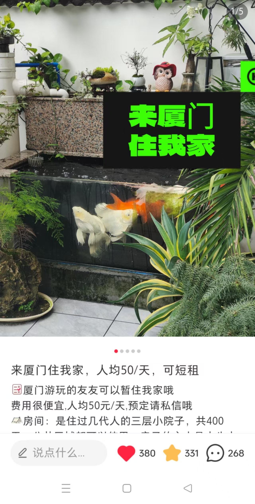

核心实战案例
不仅仅是"做过"，而是"做到"。以结果为导向的增长方法论。

Front-end

Back-end Data
营收增长 +48%
本地化叙事：从内容种草到私域核销
痛点 (Pain Point)
民宿过度依赖OTA平台，佣金高，无法发挥民宿优势。
策略 (Strategy)
策划“来厦门住我家”系列，主打“本地人视角+人情味”。
结果 (Result)
季度浏览量 1.7w+，引流私域数百人，营业额增长 48%。
场景化视觉矩阵：流量与转化的分层打法
针对不同受众偏好，构建多维内容矩阵 (Content Matrix)
流量担当
Master Series
有意思的“玄学”场景
7w+ Views (Avg 5k)
爆款系列
Washing Fruit
幻想向
5w+ Views (Avg 1w)
高转化
Feng Shui Series
精准人群痛点
互动转化率 8%
AI-Powered Production
AI 赋能的多风格内容驾驭
同一套 AI 工作流，产出截然不同的商业级成片
Storytelling
Narrative Short: 情感叙事
侧重沉浸式体验与情感共鸣。利用 Midjourney 生成情绪板 (Moodboard)，AI 辅助撰写分镜，打造电影感叙事节奏。
Commercial TVC
Product TVC: 商业广告
侧重产品卖点与视觉冲击。利用 AI 快速生成高质感空镜素材，配合快节奏剪辑与动效，强化品牌记忆点。
Production Efficiency: 1 Person = 1 Team